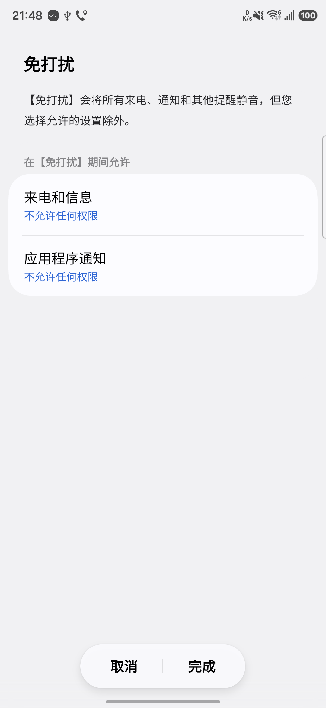
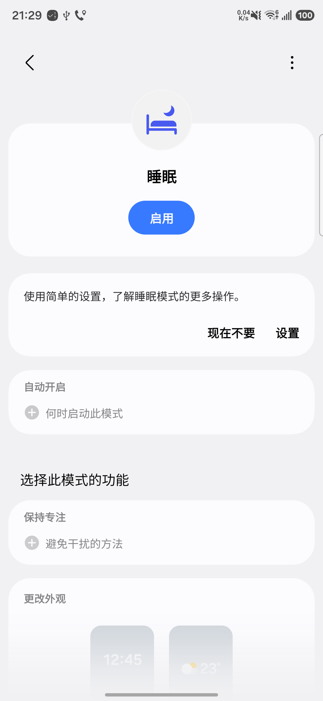
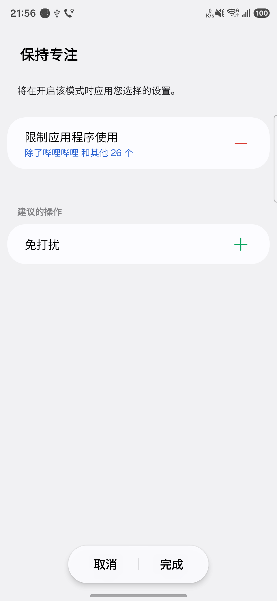
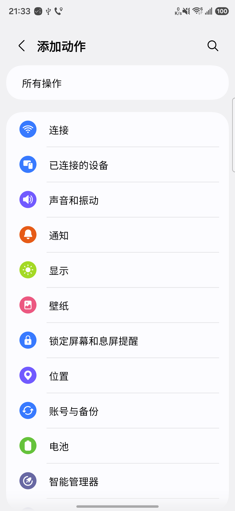
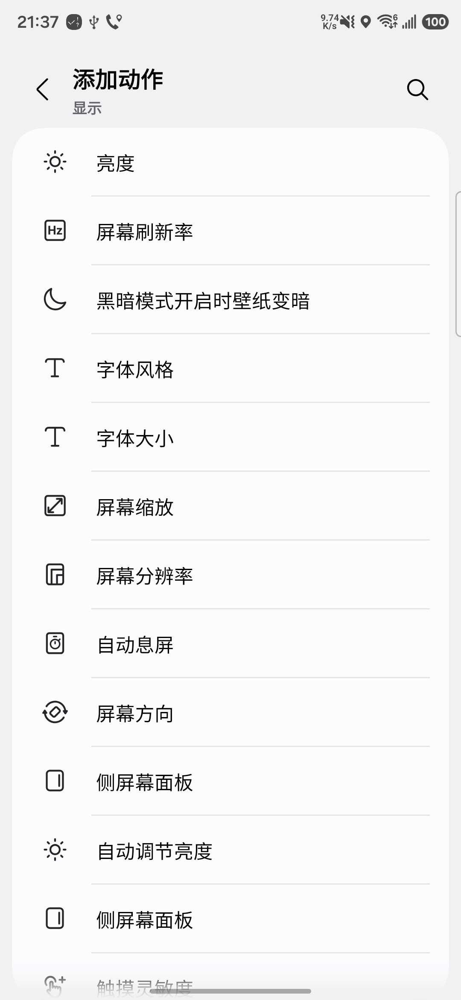
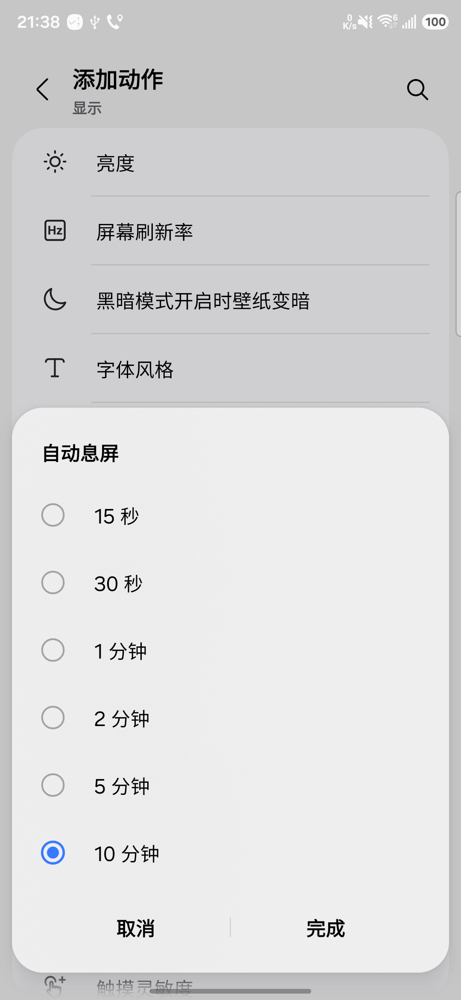

配置能力
让模式真正起作用
三步递进：先决定谁能打扰你，再换个适合氛围的壁纸时钟，最后批量调节手机的声音、亮度和硬件开关。
07
通知与应用
过滤无关通知，锁定容易分心的应用；先在二级页面选好，选完回到主卡片，不需要的随时点红减号移除。
先在全屏页面中选好，选完自动回到主卡片，不需要的随时点右侧红色减号删除


08
屏幕外观
换个适合当前场景的壁纸与时钟排版；模式退出时自动变回原来的样子，不会改乱桌面。


锁定屏幕
换上沉静的壁纸、极简的时钟样式和常亮显示表盘。
主屏幕
换专用桌面壁纸，或者只保留一页相关的应用。
退出自动还原
系统自动记下之前的壁纸，模式一关立刻还原，完全不用手动改回去。
09
系统动作（完整能力列表）
打破各个设置页面的界限，将声音、显示、电池、网络等各个功能集合到模式中统一控制。模式开启时批量调节，模式关闭时全自动还原。
灰阶黑白显示
深色模式打开深色
护眼模式减少蓝光
声音模式静音 / 振动
省电模式降低功耗
息屏提醒始终显示 / 关闭
九大分类全量系统动作与控制选项
以下为三星真机中模式所能调用的全部系统硬件与功能控制能力清单：
1. 连接与网络
通信外设
无线网络 (WLAN)
开 / 关
到家自动开启连接，离家自动关闭省电
蓝牙
开 / 关
上车自动连车载，睡眠断开所有蓝牙外设
飞行模式
开 / 关
登机或深度防打扰时彻底阻断射频信号
移动数据
开 / 关
连稳定无线网络或流量紧张时关闭蜂窝
移动热点
开 / 关
外出办公检测到笔记本时自动开热点
近场通信 (NFC)
开 / 关
通勤刷地铁卡开，回到室内自动关
快速共享
仅联系人 / 关
需要传文件时开启，平时关闭防骚扰
2. 屏幕与显示
视觉调节
屏幕亮度
0%~100% 滑块
晚上自动调暗，户外阳光下自动拉满
自动调节亮度
开 / 关
看书看视频时锁定固定亮度避免晃眼
深色模式
开 / 关
晚上全系统切换深色背景，减少光线刺激
护眼模式
开 / 色温调节
过滤屏幕蓝光，夜间长时间看屏不累眼
自动息屏时间
15秒 ~ 10分钟
阅读时延长至10分钟，离开时15秒息屏
屏幕刷新率
自适应 / 60Hz
电量低时强制切换到标准60Hz节省功耗
屏幕旋转
自动 / 纵向锁定
躺在床上看手机锁定竖屏，防误翻转
3. 声音与振动
听觉触觉
声音模式
声音 / 振动 / 静音
进入影院或会议自动静音，出来恢复响铃
媒体音量
0%~100% 独立
学习模式单独保留视频声音，铃声通知静音
铃声与通知音量
0%~100% 独立
安静工位调低铃声音量，避免惊扰同事
振动强度
强 / 中 / 弱 / 关
放桌面上开会调弱振动，防桌面嗡嗡响
杜比全景声
电影 / 音乐 / 自动
看电影戴耳机时开启空间环绕音效
4. 通知与提醒
信息播报
朗读通知
开 / 仅念发件人
开车或跑步戴耳机时，不用掏手机就能听消息
通知提示音
切换内置声音
工作期间换成轻柔短促的水滴声
相机闪光灯通知
开 / 关
静音环境下手机扣在桌上，有电话背面闪烁
屏幕闪烁通知
开 / 关
收到消息时屏幕四周温和闪光提示
5. 壁纸与锁屏
氛围呈现
锁定屏幕壁纸
换指定壁纸
上班换极简深灰壁纸，退出自动换回个人照
主屏幕壁纸
换指定壁纸
与当前模式的主题和心情保持一致
息屏提醒 (AOD)
始终 / 轻触 / 关闭
睡眠模式彻底关闭息屏显示，屋里全黑好入睡
时钟样式
数字 / 表盘 / 大字
模式中自动换成大字体或简洁时钟样式
锁屏快捷方式
替换底部两个图标
工作模式把左下角换成便签，右下角换录音机
6. 电池与性能
功耗管控
省电模式
开 / 关
自动降频CPU、限制后台，大幅延长待机
保护电池
充到80%停 / 自适应
通宵插充电器或车载常充时保护电池健康
无线反向充电
开 / 关
手机放固定支架时，自动给背后的耳机补电
性能配置文件
标准 / 轻度降温
日常待机限制高频发热，保持机身凉爽
7. 系统与维护
后台优化
自动清理运行内存
立即执行
进入游戏或重度任务前清理后台多余垃圾
限制后台应用
深度休眠
非工作或非白名单应用全部深度休眠不耗电
自动同步个人数据
开 / 暂停
流量受限或省电状态下暂停云端大文件同步
8. 操作与防误触
便捷交互
侧屏幕面板
开 / 关
打游戏或画图时关闭侧边栏，防止手指误触
单手操作模式
开 / 关
走路通勤时画面缩小，一只手就能按到全屏
高对比度文字
开 / 关
户外大太阳底下增强文字边缘，看字不费力
移除过渡动画
开 / 关
关闭全系统切换动效，点击瞬间秒开页面
9. 自带工具联动
原生应用
闹钟与计时器
开启或设倒计时
开启专注模式自动启动20分钟番茄钟
音乐播放
播放 / 暂停
进入运动模式自动播放音乐歌单
自动拒接电话
拒接并回短信
开车时来电自动挂断并回复短信告知在驾驶
游戏助推器
锁定手势 / 防误触
游戏模式屏蔽底部导航手势与消息弹窗

真机全量操作分类导航列表

显示分类中的各项具体设置

底部弹出的单选参数选择卡片